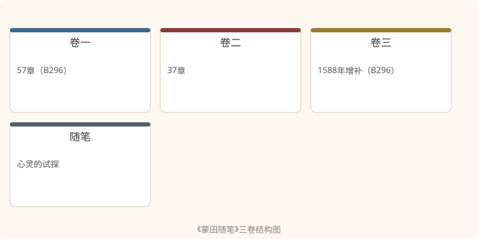

蒙田随笔集
一、基本信息
| 作者 | 蒙田 |
|---|---|
| 成书/出版 | 1580年第一二卷（Britannica：57 and 37 chapters……published in Bordeaux in 1580）；1588年版首收第三卷13章（B296） Michel de Montaigne — Encyclopaedia Britannica（百科全书） |
| 国别/地区 | 法国 |
| 时代 | 近代 · 文艺复兴 |
| 体裁 | 随笔集（三卷107篇） |
| 语言 | 法语 |

《蒙田随笔》三卷结构图（主题·结构图）
二、创作背景
Britannica（B296）：'a French writer whose Essais (Essays) established a new literary form'（确立了新的文学形式——B296）；essais 意为'the probings and testings of his mind'（心灵的试探——B296）。
怀疑论（B296）：'a skepticism towards humanity's claims to knowledge, advocating for self-acceptance and tolerance'。
开篇名句（B296）：'I am myself the matter of my book'（我自己就是本书的题材）。
三、内容脉络
卷一（57章）/卷二（37章）1580年波尔多出版；1588年版首收第三卷13章（B296）；身后1774年《旅行日记》出版（B296）。
四、主要人物表
| 人物 | 身份 | 说明 |
|---|---|---|
| 蒙田 | 随笔作者 | '我自己就是本书的题材'（B296） |
五、主题与艺术特点
- 随笔=心灵的试探（B296）。
- 自我接纳与宽容的怀疑论（B296）。
- 宗教战争中的私人城堡（B296 语境：wars of religion）。
六、影响与评论
- Britannica：'established a new literary form'（B296）。
Michel de Montaigne — Encyclopaedia Britannica（百科全书） - Britannica：怀疑论与自我接纳、宽容的倡导（B296）。
Michel de Montaigne — Encyclopaedia Britannica（百科全书）
七、阅读建议
难点
- 篇目的长短不一。
- 16世纪法语引文。
- 《蒙田随笔全集》（人民文学出版社/上海书店出版社版本，通说待核）。
- 法文原版（公有领域）。
先读《论友谊》《论恐惧》等名篇（通说）。
八、待核实
- 107篇总数核对。
- 'Que sais-je'出处待核。
- 培根《随笔》的对照阅读（通说）待核。
本页主要来源
蒙田的其他收录作品：蒙田随笔集